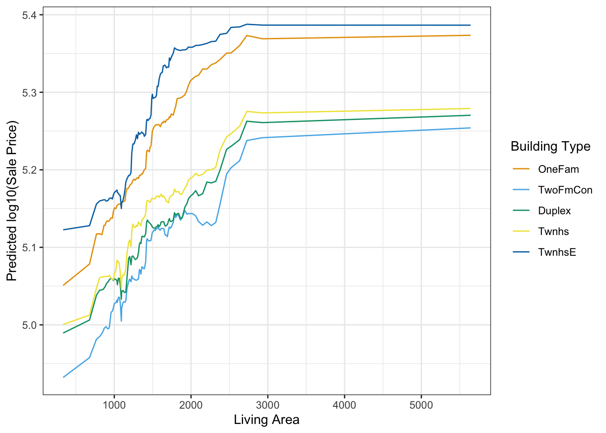
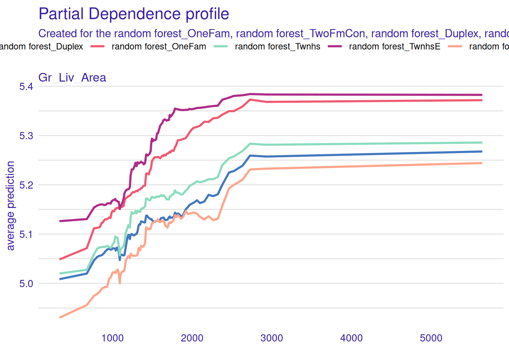
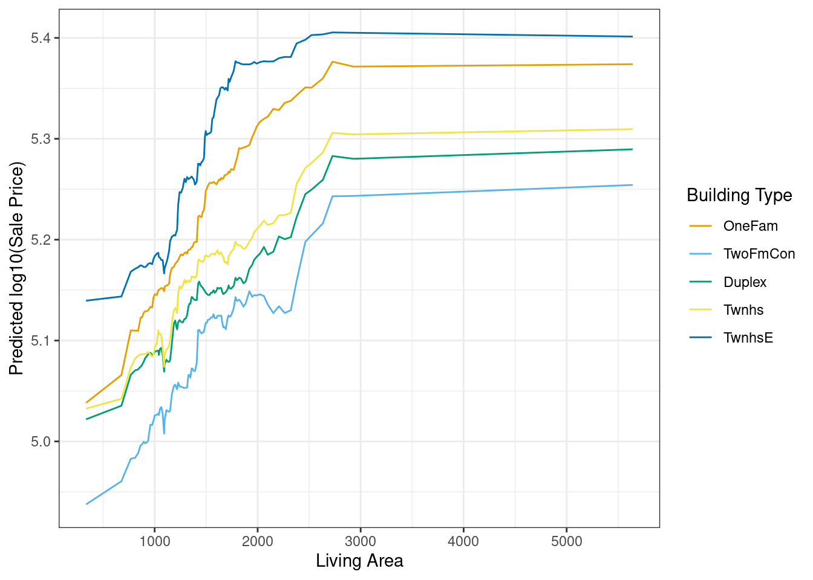
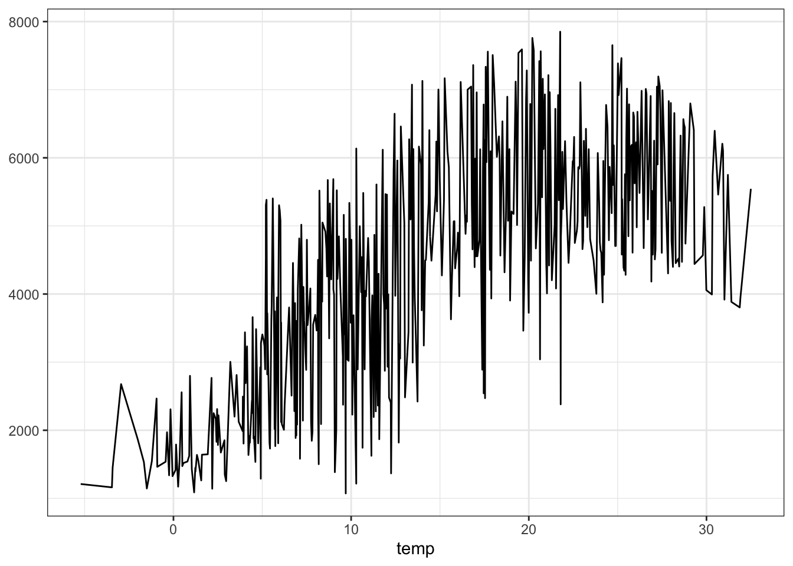
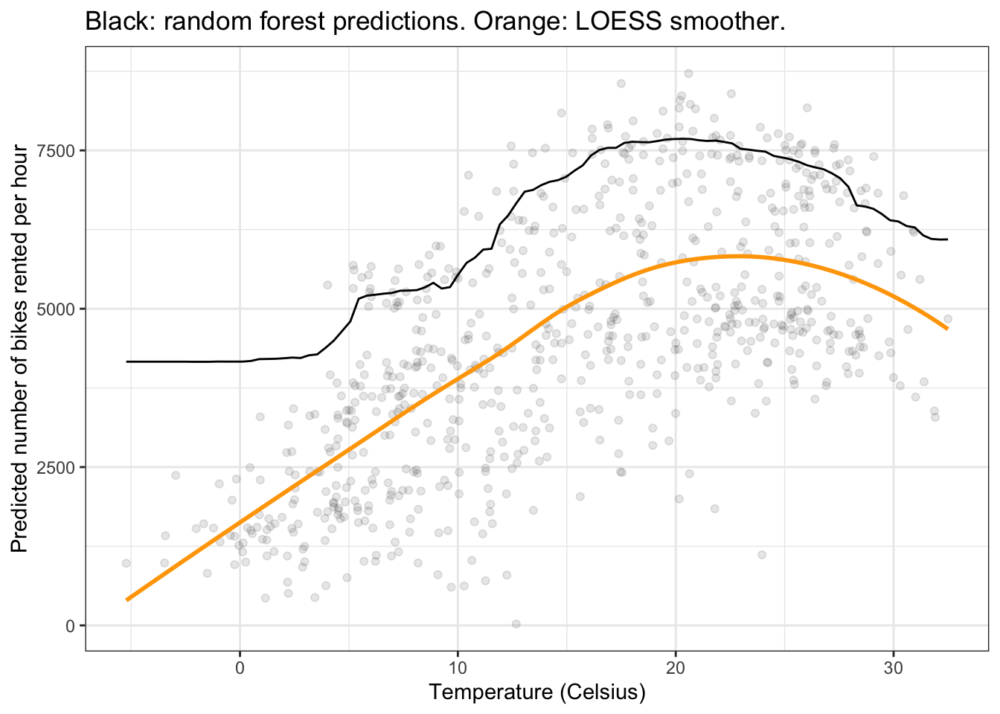

library("marginaleffects")
library("fmeffects")
library("ggplot2")
library("mlr3verse")
library("modelsummary")
library("ggokabeito")
library("tidymodels") |> suppressPackageStartupMessages()
theme_set(theme_bw())
options(ggplot2.discrete.colour = palette_okabe_ito())
options(width = 10000)Machine Learning
marginaleffects offers several “model-agnostic” functions to interpret statistical and machine learning models. This vignette highlights how the package can be used to extract meaningful insights from models trained using the mlr3 and tidymodels frameworks.
tidymodels
marginaleffects also supports the tidymodels machine learning framework. When the underlying engine used by tidymodels to train the model is itself supported as a standalone package by marginaleffects, we can obtain both estimates and their standard errors:
library(tidymodels)
penguins <- modeldata::penguins |>
na.omit() |>
select(sex, island, species, bill_length_mm)
mod <- linear_reg(mode = "regression") |>
set_engine("lm") |>
fit(bill_length_mm ~ ., data = penguins)
avg_comparisons(mod, type = "numeric", newdata = penguins)
Term Contrast Estimate Std. Error z Pr(>|z|) S 2.5 % 97.5 %
island mean(Dream) - mean(Biscoe) -0.489 0.470 -1.04 0.299 1.7 -1.410 0.433
island mean(Torgersen) - mean(Biscoe) 0.103 0.488 0.21 0.833 0.3 -0.853 1.059
sex mean(male) - mean(female) 3.697 0.255 14.51 <0.001 156.0 3.198 4.197
species mean(Chinstrap) - mean(Adelie) 10.347 0.422 24.54 <0.001 439.4 9.521 11.174
species mean(Gentoo) - mean(Adelie) 8.546 0.410 20.83 <0.001 317.8 7.742 9.350
Type: numeric
Columns: term, contrast, estimate, std.error, statistic, p.value, s.value, conf.low, conf.high, predicted_lo, predicted_hi, predicted avg_predictions(mod, type = "numeric", newdata = penguins, by = "island")
island Estimate Std. Error z Pr(>|z|) S 2.5 % 97.5 %
Torgersen 39.0 0.339 115 <0.001 Inf 38.4 39.7
Biscoe 45.2 0.182 248 <0.001 Inf 44.9 45.6
Dream 44.2 0.210 211 <0.001 Inf 43.8 44.6
Type: numeric
Columns: island, estimate, std.error, statistic, p.value, s.value, conf.low, conf.high When the underlying engine that tidymodels uses to fit the model is not supported by marginaleffects as a standalone model, we can also obtain correct results, but no uncertainy estimates. Here is a random forest model:
library(modelsummary)
# pre-processing
pre <- penguins |>
recipe(sex ~ ., data = _) |>
step_ns(bill_length_mm, deg_free = 4) |>
step_dummy(all_nominal_predictors())
# modelling strategies
models <- list(
"Logit" = logistic_reg(mode = "classification", engine = "glm"),
"Random Forest" = rand_forest(mode = "classification", engine = "ranger"),
"XGBoost" = boost_tree(mode = "classification", engine = "xgboost")
)
# fit to data
fits <- lapply(models, \(x) {
pre |>
workflow(spec = x) |>
fit(penguins)
})
# marginaleffects
cmp <- lapply(fits, avg_comparisons, newdata = penguins, type = "prob")
# summary table
modelsummary(
cmp,
shape = term + contrast + group ~ model,
coef_omit = "sex",
coef_rename = coef_rename)| Logit | Random Forest | XGBoost | |||
|---|---|---|---|---|---|
| Bill Length Mm | mean(+1) | female | -0.101 | -0.077 | -0.098 |
| (0.004) | |||||
| male | 0.101 | 0.077 | 0.098 | ||
| (0.004) | |||||
| Island | mean(Dream) - mean(Biscoe) | female | -0.044 | 0.002 | -0.004 |
| (0.069) | |||||
| male | 0.044 | -0.002 | 0.004 | ||
| (0.069) | |||||
| mean(Torgersen) - mean(Biscoe) | female | 0.015 | -0.060 | 0.008 | |
| (0.074) | |||||
| male | -0.015 | 0.060 | -0.008 | ||
| (0.074) | |||||
| Species | mean(Chinstrap) - mean(Adelie) | female | 0.562 | 0.152 | 0.441 |
| (0.036) | |||||
| male | -0.562 | -0.152 | -0.441 | ||
| (0.036) | |||||
| mean(Gentoo) - mean(Adelie) | female | 0.453 | 0.108 | 0.361 | |
| (0.025) | |||||
| male | -0.453 | -0.108 | -0.361 | ||
| (0.025) | |||||
| Num.Obs. | 333 | ||||
| AIC | 302.2 | ||||
| BIC | 336.4 | ||||
| Log.Lik. | -142.082 |
mlr3
mlr3 is a machine learning framework for R. It makes it possible for users to train a wide range of models, including linear models, random forests, gradient boosting machines, and neural networks.
In this example, we use the bikes dataset supplied by the fmeffects package to train a random forest model predicting the number of bikes rented per hour. We then use marginaleffects to interpret the results of the model.
library(mlr3verse)
data("bikes", package = "fmeffects")
task <- as_task_regr(x = bikes, id = "bikes", target = "count")
forest <- lrn("regr.ranger")$train(task)As described in other vignettes, we can use the avg_comparisons() function to compute the average change in predicted outcome that is associated with a change in each feature:
avg_comparisons(forest, newdata = bikes)
Term Contrast Estimate
count mean(+1) 0.0
holiday mean(no) - mean(yes) 133.6
humidity mean(+1) -859.0
season mean(fall) - mean(winter) 1103.6
season mean(spring) - mean(winter) 807.4
season mean(summer) - mean(winter) 930.3
temp mean(+1) 56.5
weather mean(misty) - mean(clear) -288.4
weather mean(rain) - mean(clear) -858.8
weekday mean(Friday) - mean(Monday) 173.1
weekday mean(Saturday) - mean(Monday) 218.6
weekday mean(Sunday) - mean(Monday) 258.3
weekday mean(Thursday) - mean(Monday) 138.6
weekday mean(Tuesday) - mean(Monday) 29.5
weekday mean(Wednesday) - mean(Monday) 90.0
windspeed mean(+1) -26.0
workingday mean(no) - mean(yes) -48.1
year mean(1) - mean(0) 1848.6
Type: response
Columns: term, contrast, estimate, predicted_lo, predicted_hi, predicted These results are easy to interpret: An increase of 1 degree Celsius in the temperature is associated with an increase of 56.479 bikes rented per hour.
We could obtain the same result manually as follows:
Simultaneous changes
With marginaleffects::avg_comparisons(), we can also compute the average effect of a simultaneous change in multiple predictors, using the variables and cross arguments. In this example, we see what happens (on average) to the predicted outcome when the temp, season, and weather predictors all change together:
avg_comparisons(
forest,
variables = c("temp", "season", "weather"),
cross = TRUE,
newdata = bikes)
C: season C: temp C: weather Estimate
mean(fall) - mean(winter) mean(+1) mean(misty) - mean(clear) 927.1
mean(fall) - mean(winter) mean(+1) mean(rain) - mean(clear) 242.0
mean(spring) - mean(winter) mean(+1) mean(misty) - mean(clear) 613.2
mean(spring) - mean(winter) mean(+1) mean(rain) - mean(clear) 36.1
mean(summer) - mean(winter) mean(+1) mean(misty) - mean(clear) 733.0
mean(summer) - mean(winter) mean(+1) mean(rain) - mean(clear) 126.6
Type: response
Columns: term, contrast_season, contrast_temp, contrast_weather, estimate Partial Dependence Plots
# https://stackoverflow.com/questions/67634344/r-partial-dependence-plots-from-workflow
library("tidymodels")
library("marginaleffects")
data(ames, package = "modeldata")
dat <- transform(ames,
Sale_Price = log10(Sale_Price),
Gr_Liv_Area = as.numeric(Gr_Liv_Area))
m <- dat |>
recipe(Sale_Price ~ Gr_Liv_Area + Year_Built + Bldg_Type, data = _) |>
workflow(spec = rand_forest(mode = "regression", trees = 1000, engine = "ranger")) |>
fit(data = dat)
# Percentiles of the x-axis variable
pctiles <- quantile(dat$Gr_Liv_Area, probs = seq(0, 1, length.out = 101))
# Select 1000 profiles at random, otherwise this is very memory-intensive
profiles <- dat[sample(nrow(dat), 1000), ]
# Use a counterfactual grid to replicate the full dataset 101 times. Each time, we
# replace the value of `Gr_Liv_Area` by one of the percentiles, but keep the
# other profile features as observed.
nd <- datagrid(
Gr_Liv_Area = pctiles, newdata = profiles,
grid_type = "counterfactual")
# Partial dependence plot
plot_predictions(m,
newdata = nd,
by = c("Gr_Liv_Area", "Bldg_Type")) +
labs(x = "Living Area", y = "Predicted log10(Sale Price)", color = "Building Type")
We can replicate this plot using the DALEXtra package:
library("DALEXtra")
pdp_rf <- explain_tidymodels(
m,
data = dplyr::select(dat, -Sale_Price),
y = dat$Sale_Price,
label = "random forest",
verbose = FALSE)
pdp_rf <- model_profile(pdp_rf,
N = 1000,
variables = "Gr_Liv_Area",
groups = "Bldg_Type")
plot(pdp_rf)
Note that marginaleffects and DALEXtra plots are not exactly identical because the randomly sampled profiles are not the same. You can try the same procedure without sampling — or equivalently with N=2930 — to see a perfect equivalence.
Other Plots
We can plot the results using the standard marginaleffects helpers. For example, to plot predictions, we can do:
library(mlr3verse)
data("bikes", package = "fmeffects")
task <- as_task_regr(x = bikes, id = "bikes", target = "count")
forest <- lrn("regr.ranger")$train(task)
plot_predictions(forest, condition = "temp", newdata = bikes)
As documented in ?plot_predictions, using condition="temp" is equivalent to creating an equally-spaced grid of temp values, and holding all other predictors at their means or modes. In other words, it is equivalent to:
Alternatively, we could plot “marginal” predictions, where replicate the full dataset once for every value of temp, and then average the predicted values over each value of the x-axis:
plot_predictions(forest, by = "temp", newdata = bikes)
Of course, we can customize the plot using all the standard ggplot2 functions:
plot_predictions(forest, by = "temp", newdata = d) +
geom_point(data = bikes, aes(x = temp, y = count), alpha = 0.1) +
geom_smooth(data = bikes, aes(x = temp, y = count), se = FALSE, color = "orange") +
labs(x = "Temperature (Celsius)", y = "Predicted number of bikes rented per hour",
title = "Black: random forest predictions. Orange: LOESS smoother.") +
theme_bw()`geom_smooth()` using method = 'loess' and formula = 'y ~ x'